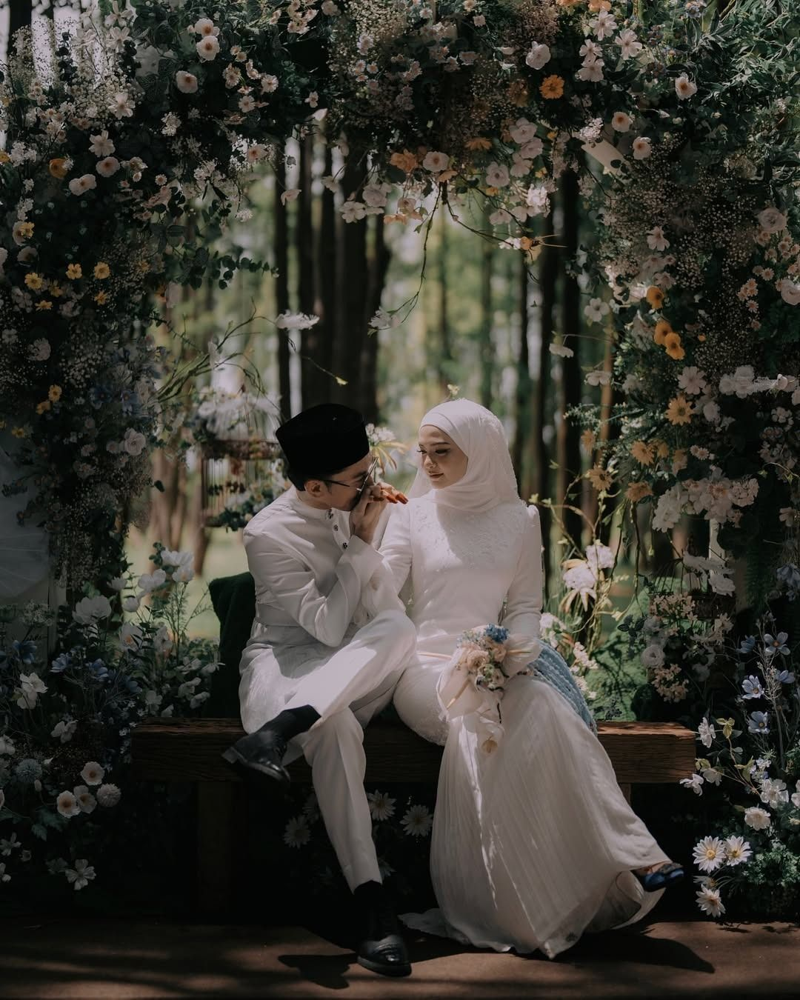

Ohreechan Editorial Team · Photography Journal
Tips Memilih Konsep Foto Prewedding agar Hasilnya Berkesan

Foto prewedding menjadi salah satu cara bagi pasangan untuk mengabadikan momen sebelum memasuki kehidupan pernikahan. Foto-foto tersebut dapat menjadi kenangan yang disimpan dalam jangka panjang. Karena itu, menentukan konsep pemotretan menjadi langkah penting agar hasil foto sesuai dengan cerita dan kepribadian pasangan.
Tentukan Tema yang Diinginkan
Tentukan suasana foto yang ingin ditampilkan. Ada pasangan yang menyukai konsep elegan dan formal, sementara yang lain lebih menyukai suasana santai, natural, atau vintage. Pilih tema yang menggambarkan karakter bersama.
Pilih Lokasi yang Sesuai
Lokasi pemotretan memengaruhi suasana foto. Pemotretan dapat dilakukan di studio, taman, pantai, atau tempat yang memiliki kenangan khusus. Perhatikan kesesuaian lokasi dengan tema, pencahayaan, akses, dan izin pemotretan.
Sesuaikan Pakaian dan Warna
Pilih pakaian yang nyaman dan sesuai dengan konsep. Warna pakaian kedua pasangan sebaiknya saling melengkapi agar hasil foto terlihat harmonis.
Gunakan Properti Secukupnya
Buket bunga, buku, sepeda, atau benda kenangan dapat mendukung cerita foto. Gunakan properti seperlunya agar perhatian tetap tertuju pada pasangan.
Pilih Pose yang Natural
Cobalah pose yang nyaman seperti berjalan bersama, berbincang, atau duduk berdampingan. Komunikasi dengan fotografer membantu menghasilkan ekspresi yang alami.
Kesimpulan
Foto prewedding yang berkesan tidak selalu membutuhkan lokasi mahal atau konsep rumit. Persiapan, komunikasi, dan konsep yang sesuai dengan karakter pasangan menjadi hal yang lebih penting.